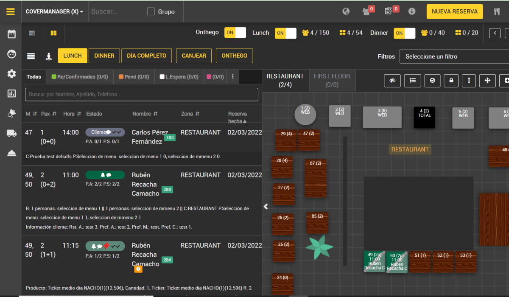

Optimizing Restaurant Operations with a Reservation Management System
A restaurant management platform had every feature a hospitality team could need: reservations, floor plans, table status, zones, waitlists, service flows. But during the 45 seconds between seating a party and picking up a phone, nobody had time to figure out which icon did what. Support calls were the workaround.
Over a year, I led the redesign of the core workflows — from the reservation list to the floor plan to the information architecture of every card. The goal wasn't to add features. It was to make the existing ones usable under pressure.

The tool had everything. Nobody knew how to use it — and support was paying the price.
The platform covered every flow a hospitality team needed, but years of feature-by-feature development left the interface without a consistent visual language.
Support was spending time answering basic task questions that the interface should have made clear.
Key Signal: Support wasn't handling technical errors — they were answering questions the interface should have made obvious. The system had trained its users to work around it.

9+ users. A support team's worth of documented pain. One clear direction.
The support team had been collecting user feedback systematically — the closest thing to a continuous usability study. Combined with direct observation sessions, it gave us a precise map of where the tool was failing.
Watched staff use the tool during actual service hours across all 4 roles. What they clicked, what they skipped, what they said out loud.
Reviewed the support team's documented feedback — categorized by interaction, frequency, and severity. Turned a support backlog into a prioritized design brief.
Traced the most common flows step by step: new booking → assignment → arrival → seating → table turnover. Identified exact moments where users abandoned the tool.

The support team had been systematically collecting user feedback. That data became the foundation of the design brief.
Four roles. All working under pressure. Each failing in a different place.

Managing walk-ins and reservations simultaneously. Need to assign tables in real time while guests are standing at the door.
Failure mode: can't find the right reservation fast enough → guest waits → tension at the door.
Overseeing occupancy and service flow. Need floor plan visibility at a glance to make decisions about seating and pacing.
Failure mode: can't read the floor plan at a glance → manual counting → delayed decisions.
Need status updates and table assignments during service. Don't have time to navigate complex interfaces.
Failure mode: wrong table assignment → service errors.
Set up zones, rules, turn times, room layouts. Less pressure during service — but configuration errors cascade into everyone else's problems.
Shared Need: Get in, do the task, get out. During service, every second lost to confusion is a second the guest is waiting.
If staff could read the interface as fast as they read the room, support calls would drop.
The opportunity wasn't to redesign the software architecture — the underlying logic was sound. The opportunity was to redesign the surface: the visual language, the information hierarchy, and the interaction patterns that staff encountered under pressure.
Make reservation status scannable by color — not by reading a label or decoding an icon.
Reservation list and floor plan should work together — not as separate contexts that require switching.
A consistent visual language that scales to the platform's complexity without adding to cognitive load.
This was a mature product with real users. A full redesign would require retraining. Every change had to feel like an improvement — not a replacement. Adoptable without a training session.
Map the system first. Then design for the moment — not the feature.
Documented every path through the reservation lifecycle — from new booking to table turnover. Identified exact moments where users abandoned the interface.
The support team's feedback logs became a structured design brief — ranked by frequency and severity of interface failures.
Rapid cycles shared with staff for quick feedback. No long review cycles — if it needed explaining, it needed redesigning.
Key Principle: In high-pressure environments, a design that requires thinking is a design that fails.
Not a new product. A usable version of the one that already existed.
The reservation card was the atomic unit of the entire platform. We mapped every field (state, time, party size, table, zone, name, date, prescriptor, comments, waiters, tags) and rebuilt the hierarchy from scratch — primary information at the top, status communicated by color at the left edge.
Design decision
Every field that required calling support to interpret was redesigned or renamed. The card was anchored around what staff needed in the first 2 seconds — name, time, table, status — not around database structure.

The original list buried customer names in small text among columns of equal visual weight. We introduced color-coded left borders for status, increased typographic hierarchy on names, standardized bottom navigation with count-per-status tabs, and added contextual tags as colored chips.
Design decision
Color-coded borders replaced icon guessing. A 1-second status read replaced a 10-second scan. The bottom tab bar — showing counts per status — gave managers an at-a-glance view of service state without opening a separate report.

The original floor plan required reading text inside each table to understand its status. During a full house, that meant scanning 40+ labels at once.
The redesign prioritized at-a-glance visibility: color communicates status, table shape communicates capacity, and the layout remains readable from 3 meters away.

The main view tried to surface everything simultaneously — counters, icons, toggles, and controls competing for attention. We restructured the navigation, introduced a dark-themed data table with avatar-based customer identification, clear filter chips, and a high-contrast primary action button. Secondary actions were grouped and deprioritized.
Design decision
Removing features from view isn't the same as removing features. Staff needed 3 primary actions for 90% of their service interactions. The redesign put those 3 in reach — everything else accessible but not competing for attention.

The original UI had inconsistencies that added cognitive load. We defined an 8px grid, established a type scale, standardized color usage, and documented component states.
Rubik and rounded corners gave the interface a more approachable, digital feel while creating a consistent foundation for future features.

Staff had to switch between the list and floor plan to find the same reservation, creating unnecessary friction.
We connected both views around the same data: selecting a reservation highlights it on the floor plan, while selecting a table filters the list.
A cleaner tool. A measurable target. An unfinished project.
The goal was to reduce support calls caused by interface confusion. The design work was completed and handed off for implementation.

Hierarchy centered on guest name, party size, time, and status, removing unnecessary information and ambiguity.
A consistent color as status system, support for multiple room layouts, and readability from 3 meters away.
Color coded status borders made reservations easier to scan without relying on icon labels.
Navigation was restructured, primary actions became easier to reach, and visual noise was reduced.
An 8px grid, Rubik typography, rounded corners, and documented component states created a foundation for future features.
List and floor plan worked together, with selections synchronized between both views.
Three things that changed how I think about operational tools.
In high pressure environments, every moment spent interpreting the interface adds friction.
Months of documented issues helped identify recurring pain points before additional research.
Consistent patterns reduce cognitive load for users and make the product faster to extend.
Great restaurant experiences start behind the scenes — with tools that let staff focus on people, not processes.
Designing for operational environments taught me that clarity and speed aren't design goals. They're business requirements. And a support team's documentation is the most honest usability test you can have.